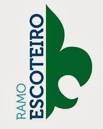
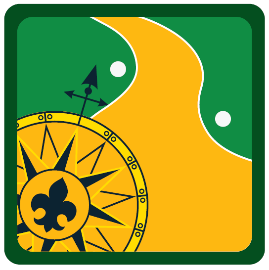

<link rel="stylesheet" type="text/css" href="../css/escoteiro.css">

<section id="ramo-escoteiro">
    <section class="logo-escoteiro">
      
    </section>

    <section class="informacao-escoteiro">
        <div class="img-sinalescoteiro">
            
        </div>
        <p>
            Entre os 11 e 14 anos, fazemos parte do Ramo Escoteiro – somos patrulhas de 5 a 8 jovens, de meninos e
            meninas, que juntas formam uma tropa. Aqui, além de trabalhar em equipe e entender a importância de
            respeitar a natureza, aprendemos diversas coisas que nos deixam mais confiantes e decididos.
            <br>
            <br>
            Cada patrulha tem seu próprio bastão e bandeirola, onde gravamos lembranças marcantes de nossa experiência
            juntos, assim como o livro de patrulha, que tem todas as informações sobre os membros e fotografias das
            nossas ações. Elegemos um monitor, que age como um líder dentro de nosso grupo, e desenvolvemos algumas
            atividades por conta própria, como ir ao cinema, jogar algum jogo, etc.
            <br>
            <br>
            Atividades como acampamentos e excursões fazem parte da nossa vivência no Ramo Escoteiro, sempre com o
            acompanhamento de adultos. Com nosso lema “Sempre Alerta”, estamos interessados em descobrir coisas novas e
            estar cercados de amigos.
            <br>
            <br>
            Antes de completar 15 anos, passamos por um período de transição em que nos adaptamos à realidade do Ramo
            Sênior, e nos despedimos da tropa escoteira com a Cerimônia de Passagem.
           <br>
        </p>
        <br>
        <br>
        <p>
            Fundamentado na vida em equipe e no encontro com a natureza, o Ramo tem como marco simbólico a expressão:
        </p>
        <br>
        <h3>
            “explorar novos territórios com um grupo de amigos”. O lema dos escoteiros é “Sempre Alerta”.
        </h3>

        <h2>
            Temos nossa LEI, que é composta composta por 10 artigos:
        </h2>
            1 - O escoteiro é honrado e digno de confiança.<br>
            2 - O escoteiro é leal.<br>
            3 - O escoteiro está sempre alerta para ajudar o próximo e pratica diariamente uma boa ação.<br>
            4 - O escoteiro é amigo de todos e irmão dos demais escoteiros.<br>
            5 - O escoteiro é cortês.<br>
            6 -  O escoteiro é bom para os animais e as plantas.<br>
            7 - O escoteiro é obediente e disciplinado.<br>
            8 - O escoteiro é alegre e sorri nas dificuldades.<br>
            9 - O escoteiro é econômico e respeita o bem alheio.<br>
           10 - O escoteiro é limpo de corpo e alma.<br>
        <br>
        <h2>
            Depois de cumprirmos nossos primeiros passos (Periodo Introdutório), fazemos nossa promessa:
        </h2>
        <p>
            Prometo pela minha honra fazer o melhor possível para:
            <br>
            Cumprir meus deveres para com Deus e minha Pátria;
            <br>
            Ajudar o próximo em toda e qualquer ocasião;
            <br>
            Obedecer à Lei Escoteira.
        </p>
    </section>

    <section class="informacao-escoteiro">
        <h2> A Aventura Escoteira</h2>
        <p>
            No Ramo Escoteiro você realiza tantas atividades que anotar todas elas facilita bastante na hora de
            conquistar sua Lis de Ouro! Para isso, você tem duas ferramentas bem simples à sua disposição: o mapa de
            progressão e o aplicativo de Progressão do Ramo Escoteiro – os dois servem para marcar as atividades
            realizadas durante sua “Aventura Escoteira”.
            <br>
            Cada item que você completa significa que você está um passo mais perto do distintivo de Escoteiro Lis de
            Ouro. E não é só isso, você mostra para seu chefe e amigos o quanto você é responsável e capaz de se virar
            em todo tipo de situação; ao ver você se desenvolvendo tão rapidamente, seus companheiros de patrulha vão
            querer o mesmo e você vai poder ajudá-los! Deixe seu chefe por dentro de todas as suas conquistas: ele
            poderá dar uma mãozinha quando você precisar.
            <br>
            Além do trajeto que está no mapa, você vai precisar tirar pelo menos uma Insígnia de Interesse Especial, ter
            o cordão de eficiência vermelho e branco, ter 10 noites de acampamento com sua patrulha ou tropa e
            conquistar uma das Insígnias da Modalidade do Ramo Escoteiro. Mas esteja “Sempre Alerta”, depois de tudo
            isso, você ainda precisa de uma indicação da Corte de Honra e do escotista.
            <br>
            Conquistar a Lis de Ouro mostra que você se divertiu muito, mas também se desenvolveu demais.
            <br>
            Mãos à obra, escoteiro?
           <br>
        </p>
    </section>

    <section class="informacao-escoteiro">
        <h2> Sistema de Progressão</h2>
        <p>
            Como parte do Programa Educativo, o Ramo Escoteiro trabalha
            com um sistema de avaliação da progressão pessoal, que visa
            oferecer ao jovem e ao escotista alguns indicadores para avaliar
            o crescimento pessoal de cada jovem. Esses indicadores revelam
            não só o impacto das atividades escoteiras nos jovens, mas
            também pontos fortes e fracos de cada um, o que permite uma
            intervenção mais direta dos escotistas.
            <br>
            Para efetivar o acompanhamento, foram desenvolvidos
            indicadores que servirão de base para a avaliação.
            Para motivá-los em busca do autodesenvolvimento
            estabeleceram-se duas etapas de progressão em cada uma das
            fases que compõem a pré-adolescência. Ou seja, a vivência
            completa na Tropa Escoteira passa por quatro diferentes etapas:
            <br>
        </p>

        <div class="informacao-escoteiro escoteiro-progressao">
            <div>
                
                <h4>Promessa</h4>
            </div>
            <div>
                
                <h4>Pistas</h4>
            </div>
            <div>
                
                <h4>Trilha</h4>
            </div>
            <div>
                
                <h4>Rumo</h4>
            </div>
            <div>
                
                <h4>Travessia</h4>
            </div>
        </div>
        <p class="clear-esquerda"></p>
    </section>

    <section class="informacao-escoteiro">
        <h2> Cordão Verde e Amarelo</h2>
        <p>
            É uma condecoração especial concedida ao Escoteiro que tenha atingido este nível de eficiência, através
            do cumprimento dos requisitos abaixo.
            <br>
            Quais são os requisitos para a conquista do Cordão Verde e Amarelo?
            <br>
            O Cordão Verde e Amarelo será concedido pela Diretoria do Nível Local a que se encontra vinculado o
            jovem, por proposta dos escotistas da Seção, ao Escoteiro que:
            <br>
            For especialmente recomendado pela Corte de Honra de sua Tropa;
            <br>
            Possuir, no mínimo, 6 (seis) especialidades distribuídas nos 5 (cinco) Ramos de Conhecimento
            (Habilidades Escoteiras, Serviço, Cultura, Ciência e Tecnologia, Desportos), em qualquer nível.
            <br>
        </p>
        <br>
        <br>
        
    </section>

    <section class="informacao-escoteiro">
        <h2> Cordão Vermelho e Branco</h2>
        <p>
            É uma condecoração especial concedida ao Escoteiro que tenha atingido este nível de eficiência, através do
            cumprimento dos requisitos abaixo.
            <br>
            Quais são os requisitos para a conquista do Cordão Vermelho e Branco?
            <br>
            O Cordão Vermelho e Branco será concedido pela Diretoria do Nível Local a que se encontra vinculado o jovem,
            por proposta dos escotistas da Seção, ao Escoteiro que:
            <br>
            Possua o Cordão de Eficiência Verde e Amarelo;
            <br>
            Seja especialmente recomendado pela Corte de Honra de sua Tropa;
            <br>
            Possua, no mínimo, 12 (doze) especialidades, estando entre estas especialidades conquistadas, a
            especialidade de
            Primeiros Socorros, no nível 2, e mais 3 (três) especialidades do Ramo de conhecimentos Serviços no nível 2
            (ou
            maior).
            <br>
        </p>
        <br>
        <br>
        
    </section>

    <section class="informacao-escoteiro">
        <h2>
            DISTINTIVO DE ESCOTEIRO LIS DE OURO
        </h2>
        <p>
            É o distintivo de condecoração de grau máximo do Ramo Escoteiro.
            <br>

            Quais são os requisitos para a conquista do Escoteiro Lis de Ouro?
            O Distintivo de Escoteiro Lis de Ouro é concedido ao Escoteiro ou Escoteira que:
            <br>

            Tenha realizado a totalidade das atividades previstas no Guia da Aventura Escoteira - Rumo e Travessia;
            <br>
            Tenha conquistado o Cordão Vermelho e Branco;
            <br>
            Tenha conquistado uma das Insígnias de Interesse Especial do Ramo Escoteiro.
            <br>
            Possua pelo menos 10 noites de acampamento, como Escoteiro, com sua Patrulha ou Tropa Escoteira;
            <br>
            Tenha conquistado a Insígnia da sua respectiva modalidade (Aviador, Grumete ou Explorador), do Ramo
            Escoteiro.
            <br>
            Seja especialmente recomendado pelos escotistas e pela Corte de Honra de sua Tropa.
            <br>
            Para conquista do Distintivo Escoteiro Lis de Ouro, além de cumprir os requisitos acima, a concessão do
            mesmo deve ser aprovada pela Diretoria do Nível Local, homologada pela Diretoria Regional e certificada pela
            Diretoria Executiva Nacional.
            <br>
            Os Escoteiros podem começar a realizar os itens necessários para conquistar o Distintivo de Lis de Ouro
            desde o início da sua vida na Tropa, em paralelo com as outras etapas de progressão.
            <br>
        </p>
        <br>
        <br>
        

        <br>
        <br>
        <p> <a href="https://www.escoteiros.org.br/insignias-do-ramo-escoteiro//">Insígnias</a></p>
        <p><a href="https://www.escoteiros.org.br/especialidades/">Especialidades</a></p>

    </section>
</section>